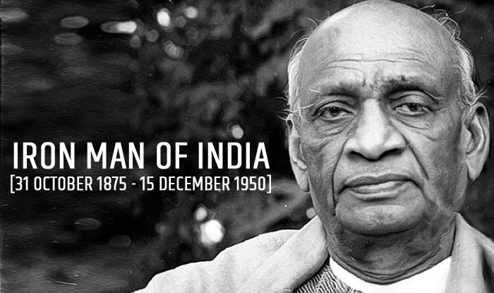

Sardar Vallabhbhai Patel

Born: 31 October 1875, Nadia
Died: 15 December 1950, Mumbai
Full name: Vallabhbhai Jhaverbhai Patel
Famously Known As Sardar, Iron Man Of India
Vallabhbhai Patel was born on 31st October 1875. A senior leader of the Indian National
Congress, he had an immense contribution to the Indian freedom struggle as one of the most
influential and strong-minded Indian freedom fighters. He was one of the most influential leaders
of Gujarat, who organized peasant movements against the British based on Gandhi's ideals of
non-violence. One of the first congress leaders to have accepted the British plan of partition for
India, he is remembered for his role in integrating the princely states into the dominion of India.
His efforts led to the integration of around 562 princely states. After independence, he served as
the first home minister and deputy prime minister of India.
Patel was born into a self-sufficient landowning family of the Leva Patidar caste.
Reared in an atmosphere of traditional Hinduism, he attended primary school at Karamasad and high
school at Petlad but was mainly self-taught. Patel married at the age of 16, matriculated at 22,
and passed the district pleader's examination, which enabled him to practice law. In 1900 he set up an
independent office of district pleader in Godhra, and two years later he moved to Borsad.
As a lawyer, Patel distinguished himself in presenting an unassailable case in a precise
manner and in challenging police witnesses and British judges. In 1908 Patel lost his wife, who had
borne him a son and daughter, and thereafter remained a widower. Determined to enhance his career in
the legal profession, Patel traveled to London in August 1910 to study at the Middle Temple.
There he studied diligently and passed the final examinations with high honours.
Returning to India in February 1913, he settled in Ahmadabad, rising rapidly to become the leading
barrister in criminal law at the Ahmadabad bar. Reserved and courteous, he was noted for his
superior mannerisms, his smart, English-style clothes, and his championship in bridge at Ahmadabad's
fashionable Gujarat Club. He was, until 1917, indifferent to Indian political activities.